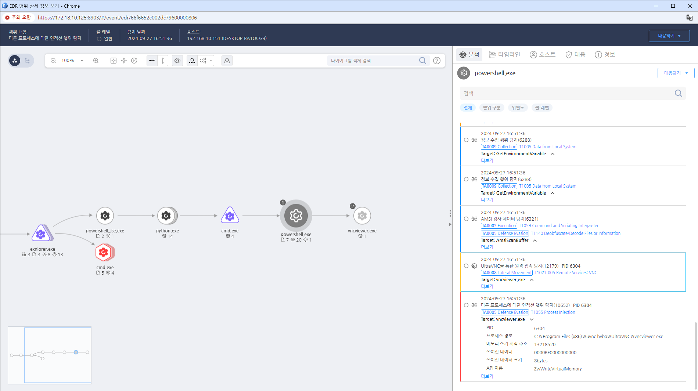

MITRE ATT&CK 액션을 기준으로 대응 방안을 작성
Action = "ProcessCreate" AND TergetProcessPeFileVersion_FileDesctipcion = "VNCViewer" AND Cmdline = "/password"
 https://172.18.10.125:8903/#/event/edr/66f6652c002dc79600000806
IDS/IPS를 사용하여 비정상적인 VNC 트래픽을 실시간으로 탐지하고 알림을 설정합니다.
VNC 관련 로그를 정기적으로 분석하여 의심스러운 접근 시도나 파일 전송을 모니터링합니다.
의심스러운 활동이 감지된 시스템을 즉시 격리하여 추가 피해를 방지합니다.
VNC를 통한 비정상적인 접근이 발견될 경우 사고 대응 절차를 즉시 실행합니다.
의심스러운 IP 주소에서의 VNC 트래픽을 차단하여 공격을 방어합니다.
VNC 관련 취약점에 대한 보안 패치를 신속하게 적용하여 시스템을 보호합니다.
중요한 파일과 폴더에 대한 접근 권한을 최소화하고 정기적으로 검토합니다.
직원들에게 VNC 및 네트워크 보안 관련 교육을 실시하여 인식을 높입니다.
네트워크 접근 제어:
방화벽 설정:
강력한 인증 및 권한 관리:
파일 및 폴더 권한 제한:
정기적인 보안 감사:
모니터링 및 경고 시스템 설정:
데이터 암호화:
Action 실행시 함꼐 영향을 받는 다른 Techniqes
| ATT&CK |
|---|
| T1021.005 |
| D3FEND |
|---|
| D3-NTA Network Traffic Analysis |
| D3-NTF Network Traffic Filtering |
| D3-ITF Inbound Traffic Filtering |
| D3-OTF Outbound Traffic Filtering |